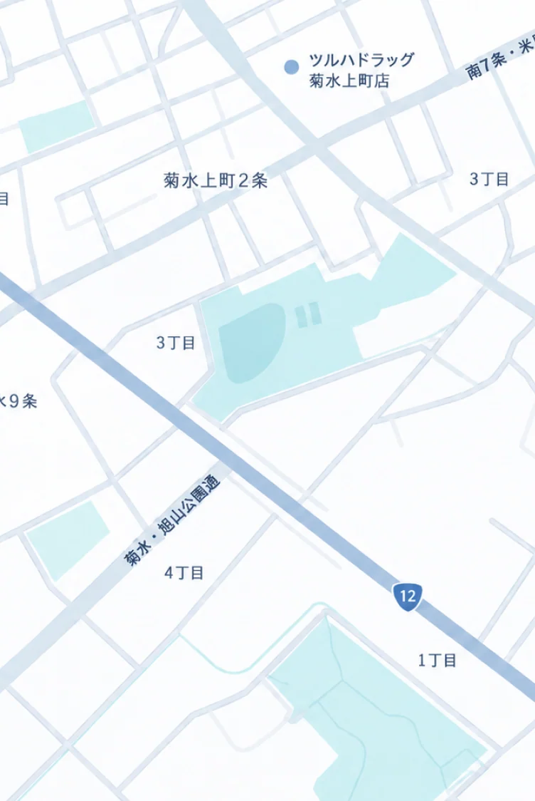

自分らしい毎日に、
歯科医療という安心を。
CONCEPT
コンセプト
悪くなった歯を治すことだけが、歯科医療の役割ではありません。
私たちは、一人ひとりの想いに寄り添い、
治療から予防、その先の健康まで、あなたと一緒に考えます。
おいしく食べること。
誰かと楽しく話すこと。
自然に笑うこと。
そんな、一人ひとりの大切な日常が、これからもずっと、続いていくように。
私たちは「お口の健康」を通じて、あなたの何気ない毎日を、近くで支えます。
当院について ›SERVICE
診療内容
痛みや違和感、見た目のお悩みまで。
お口のことで気になることがあれば、お気軽にご相談ください。
MAINTENANCE
メンテナンス
毎日のケアに、予防のためのもうひとつの習慣を。
しっかり歯をみがいていても、どうしても落としきれない汚れがあります。
そんな普段のケアでは届かないところを、私たちにもお手伝いさせてください。
ご自宅での歯みがきに、歯科医院での定期検診やクリーニングをプラスすることで、むし歯や歯周病の予防にもつながります。
おいしく食べることも、自然に笑えることも、人生を豊かにしてくれる大切な喜びです。
そんな何気ない日々の喜びが、これからもずっと続いていくように。
お口のメンテナンスを、日々の習慣にプラスしましょう。
お口の健康について、まずはお気軽にご相談ください。
予防のカウンセリングを予約する ↗INFORMATION
お知らせ
ACCESS
アクセス

北産歯科医院
〒003-0812
北海道札幌市白石区菊水上町2条4丁目36-77
公共交通機関でお越しの方
JR北海道バス「菊水9条3丁目」停留所より徒歩 約3分。
地下鉄東西線「東札幌駅」より徒歩 約20分。